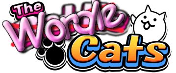
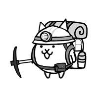

Cat
Rarity
Cost
Range
Target
Trait
Ability
Form

Welcome to The Wordle Cats! The object of this game is to guess the randomly chosen battle cat in the least amount of tries
After you submit a cat, the background of each stat will fill in to give you a hint on what the answer is
A green background means that the stats of your guess are identical to the answer
A yellow background means that the two share some commonalities (eg: kai and nurse share the floating trait, but not black)
A red background means no part of the stat is identical, but arrows on the range and cost will show you if the answer is higher or lower
Additionally, hints will be available after a certain number of guesses to help identify the target cat
Credits:
Made by
DavidCatan
This game is heavily inspired by the game Terradle by cxhuy (
https://www.terradle.com/
)
All images were obtained from The Battle Cats Wiki (
https://battle-cats.fandom.com/wiki/Battle_Cats_Wiki
)
Ponos Socials
Facebook
Twitter
Instagram
You need to enable JavaScript to view the full site.